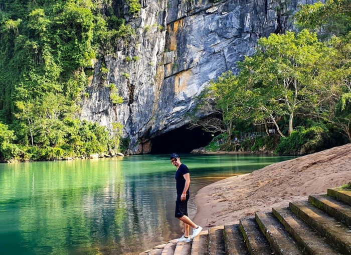

Động Phong Nha nằm trong vườn Quốc gia Phong Nha - Kẻ Bàng, là Di sản thiên nhiên thế giới được UNESCO công nhận, thuộc xã Sơn Trạch, huyện Bố Trạch, tỉnh Quảng Bình, cách thành phố Đồng Hới về phía Tây Bắc khoảng 45km.

Cùng tìm hiểu động Phong Nha ( Phong Nha - Kẻ Bàng) ở đâu để lên kế hoạch du lịch. Ảnh: Sưu tầm
Trong các hang động thì Phong Nha thật sự nổi bật nhất với chiều dài khảo sát lên tới gần 8km, có nhiều hang động đẹp, thạch nhũ bắt mắt. Tất cả làm nên vẻ đẹp hùng vĩ, mang tới cảm giác lý thú, thư thái và dễ chịu cho du khách tới đây tham quan.